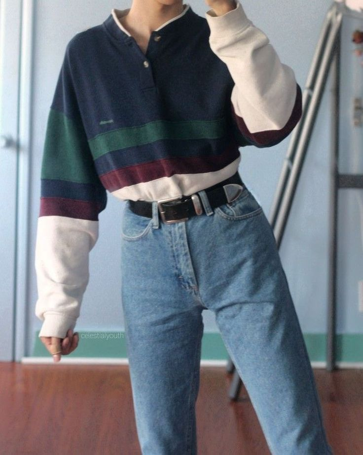
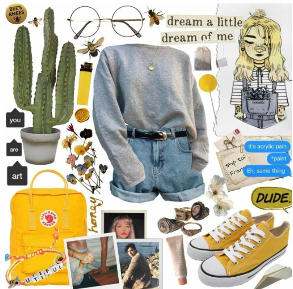
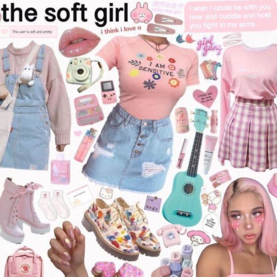
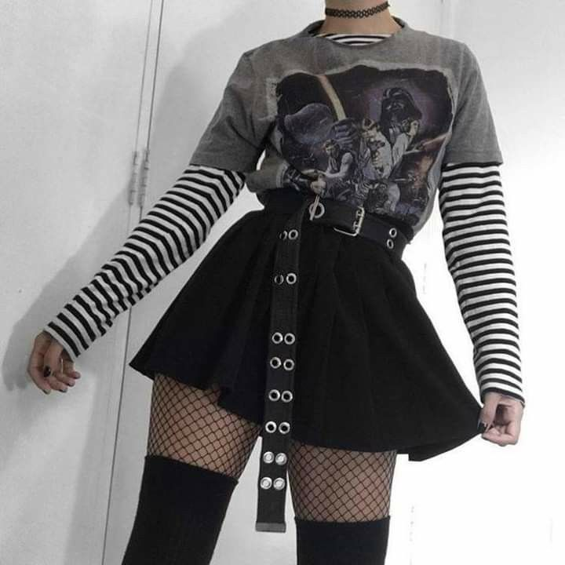
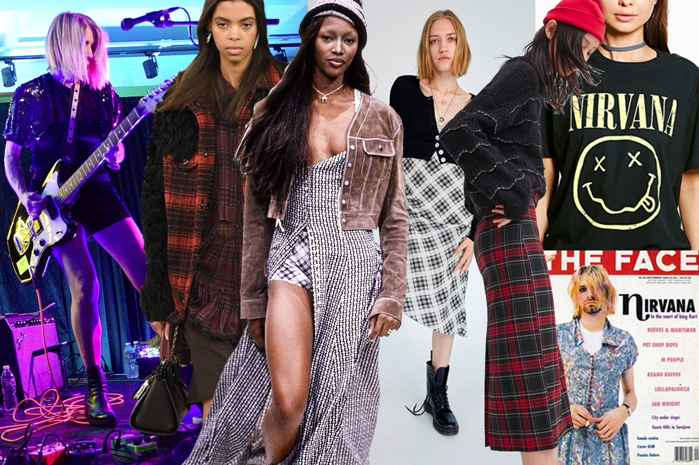
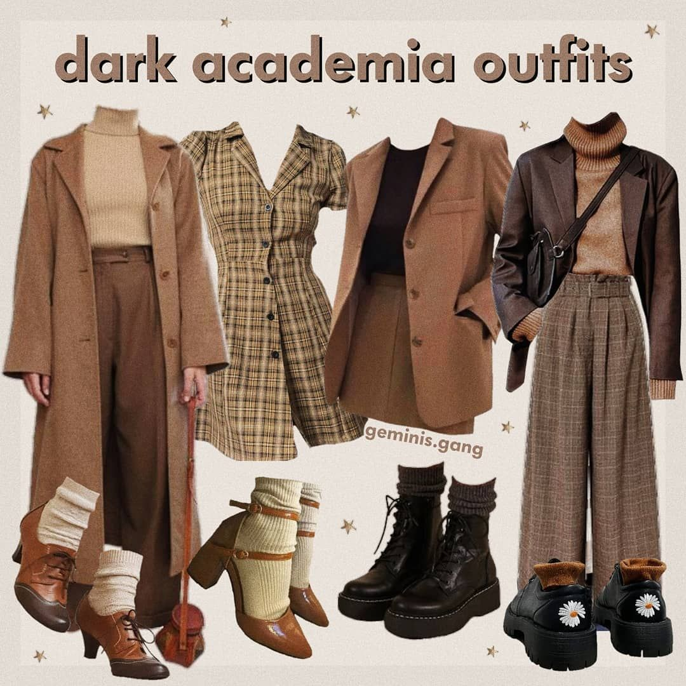

En la actualidad se han diversificado las maneras en que las personas disfrutan su vida, dando lugar al surgimiento de los llamados "estilos de vida". Un estilo de vida es la interacción de nuestros valores y aspiraciones con elentorno o ambiente. En el hogar, la decoración juega un papel muy importante al ser un reflejo más del estilo de vida de quienes lo habitan.
Hoy en día el estilo vintage goza de enorme popularidad. Hay quien decore su casa con muebles y motivos antiguos, quien use vestidos y accesorios a la moda de otras épocas, e, incluso, quien celebre su boda con trajes y vestidos de tiempos pasados.El estilo vintage determina las tendencias de moda de gran número de personas tanto en su vestimenta, peinados como maquillaje, forma parte de darle un toque de creatividad y recrear lo que se consideraba antiguo.Por ejemplo, son muchos los famosos quienes gustan del estilo vintage y son íconos de la moda. Entre las ventajas más destacables del estilo vintage en la moda, está la oportunidad de reutilizar objetos bien conservados y de valor especial.Por ello, por ejemplo, son muchas las decoraciones en las que se pueden apreciar muebles, estantes, entre otros objetos vintage que dan un toque especial y original entre lo moderno y antiguo.
La estética Art Hoe es una estética basada en el amor por el arte, una conexión con la naturaleza, la pintura y las flores. Creado por un usuario de Tumblr conocido como sensibleblackperson, la escena Art Hoe fue creada originalmente para POC (personas de color) y ha sido acusada de ser blanqueada, pero la comunidad Art Hoe celebra la diversidad y cualquiera puede ser un Art Hoe independientemente de su herencia o carrera. Los famosos Art Hoes originales incluyen a la actriz Amandla Stenberg, la estilista Rian Phin, la ilustradora y músico Jenelle Lewis y el rapero Babeo Baggins.
Su estilo es muy soñador, mezcla cosas de infancia como overoles y coletas con maquillaje y otros estilos más adultos. Además, están acostumbradas a combinar sus atuendos con tenis, de preferencia, de colores claros.
E-girl —niña electrónica de su traducción literal del inglés: Electronic girl, es un estilo juvenil, formada mayormente por mujeres, que surgió a fines de la década de 2010 y se ve casi exclusivamente en las redes sociales. El estilo está inspirado en la cultura skateboarding, la moda de los años 1990 y 2000, el anime, el hip hop, el soft grunge, lo emo/scene, lo gótico, y el rave.
‘Grunge’ es sinónimo de sucio -concretamente es la jerga utilizada en inglés- o de desaliñado. También es el estilo musical impulsado por las icónicas bandas Nirvana y Pearl Jam, un subgénero del rock alternativo que triunfó en la década de los 90. Con la explosión y su posterior fama, nació un movimiento que no solo se definía a través de la canción, sino que se diferenciaba a través de su vestuario.
En cuanto al aspecto de la moda, otra área de la tendencia que es la más popular, está asociada a la élite inglesa masculina, buscando dar la impresión de estudiar en una universidad de principios del siglo XX: blazers, suéteres de cuello alto, ropa vintage donde predominan los cuadros y tonos otoñales. Esta moda es sumamente atractiva para los jóvenes ya que promueve un estilo andrógino ya que es común usar sacos o chaquetas clásicas.